2013-03-01-Neural-Network
Table of Contents
1 Bias vs. Variance
2 Trade-offs
- Similar to precision, we make trade-offs when training models
- Bias: How far off are the model predictions on average?
- Variance: If we retrained with different data, how different would our guesses be?
2.1 Details notes
- Bias: difference in "Expected" value from models from the real value
- Variance: difference in "Expected" value from each other
- Variance: Another way to think about it: how specific is our model to our data? If we were training a tree with k-fold validation, would we get completely different rule sets for each set of data?
- "Expected": These are model type properties. Train the model multiple times with different data, then evaluate all models performance
3 Regression two_col
- Can we do better than linear regression on some data sets?
- Polynomial regression
- How many polynomials?
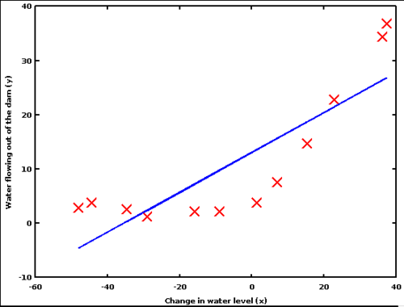
3.1 Polynomial notes
- Sure! Use a polynomial instead:
x^22x - x^2 + 4x^3 - If you're not sure what the underlying data model is, have to test
- img: http://cheshmi.tumblr.com/
3.2 One
3.2.1 So-So notes
- How is the bias? Not great, fair amount of error
- How is the variance? Pretty good, assuming random sample
3.3 Two

3.3.1 Better notes
- Bias? Better, less error
- Variance? more risky depending on which samples you get, since model diverges quickly
3.4 Three
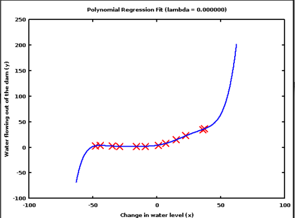
3.4.1 Worrying notes
- Now getting a little weird. We're not finding the general pattern, more like exactly fitting a line over these points
- If we made model with different data, we're going to get a different line
3.5 Many
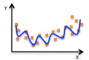
3.5.1 Now kind of ridiculous notes
- Intuitively we know this is not a description of the data
- If a point was found near the border, completely dependant on the data the model trained on
4 Over-fitting
- Over-fitting: reflecting the exact data given instead of the general pattern
- High variance is a sign of over-fitting: model guesses vary with the exact data given
- Avoidance: ensembles average out variance, regularization adds a cost to model complexity
4.1 Avoidance notes
- Ensembles combine multiple models together. Those multiple models may have a lot of variance, but as long as they have good Bias, we'll center in on the correct result
- Remember our cost function? We wanted to minimize the error. If you add in a way to measure model complexity, you can add that to the cost, so that you are explicitly trading-off the complexity of your model with the quality of the solution
- If we wanted to add a complexity cost to the previous model, what would the cost be dependent on?

6 Brains
- Neural networks try to model our brains
- Neurons/perceptrons sense input, transform it, send output
- Neurons/perceptrons are connected together
- Connections have different strengths
7 Training
- Learn by adjusting the strengths of the connections
- Mathematically, strength is a weight multiplier of the output
- When we've found the right weights
8 Nomenclature two_col
- Input layer
- neurons whose input is determined by features
- Hidden layer
- neurons that calculate a combination of features
- Output layer
- neurons that express the classification
- Weights
- numeric parameter to adjust input/output
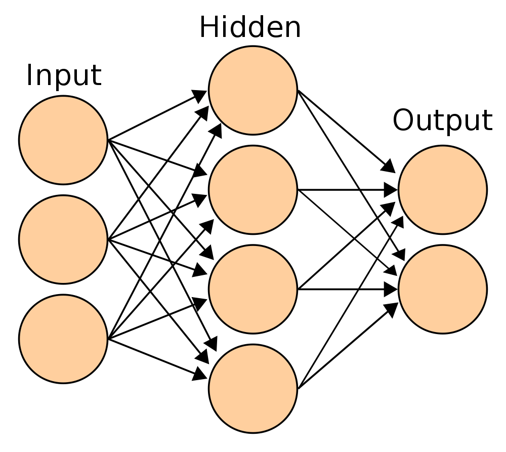
9 Handwriting
- Recognize handwritten digits
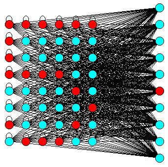
9.1 Inputs => Outputs notes
- Break up drawing cell into pixels
- Input takes pixel=on|off
- Output is highest valued output node, 1 for each digit
- img: http://vv.carleton.ca/~neil/neural/neuron-d.html
10 Forward Propagation
- Sum of inputs * weights
- Apply sigmoid
- Send output to next layer
- Repeat
10.1 Repeat
- Multiple hidden layers used to model complex feature interaction
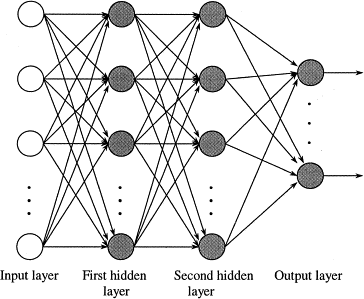
10.2 Sigmoid two_col
- Normalize input to [0,1]
- Makes weak input weaker, strong input stronger
1 / (1 + e^-input)
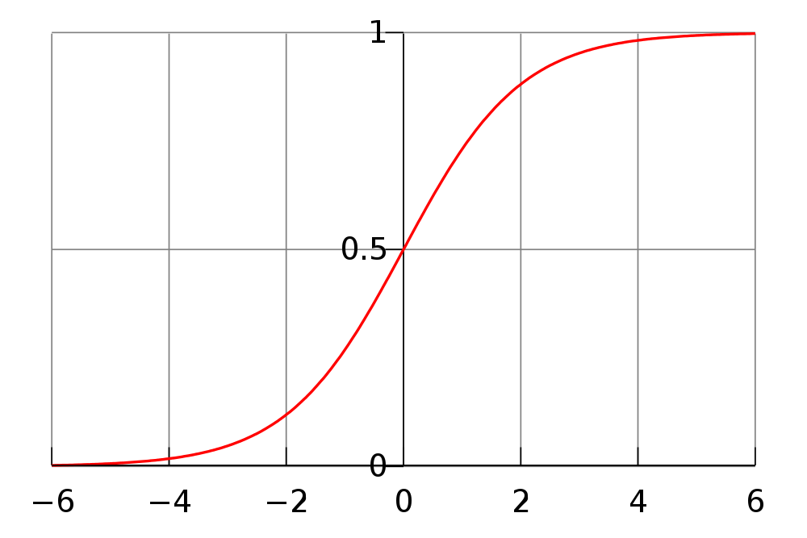]
11 Example

11.1 Simple notes
- Simple NN with just one output
- Output can model true/false
- Inputs are numerical
11.2 Weights
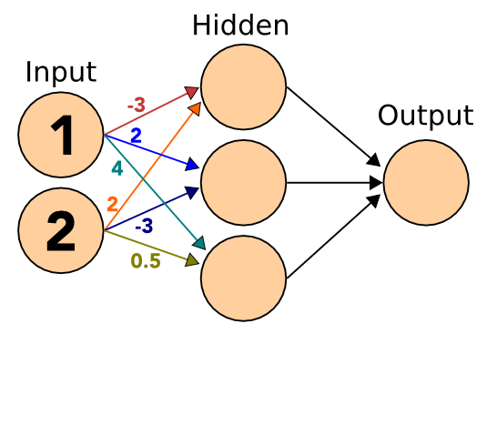
11.2.1 Later notes
- We'll discuss how weights are determined later
- Fill in the Hidden layer with sum of inputs * weights
11.3 Sigmoid
11.3.1 Apply notes
- Apply the sigmoid to the incoming signals
11.4 Sigmoid
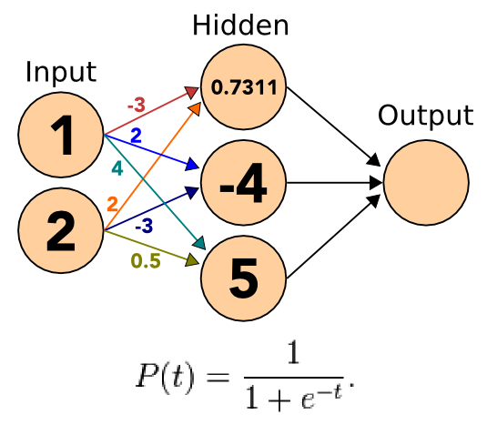
11.4.1 Apply notes
- Apply the sigmoid to the incoming signals
11.5 Sigmoid
11.5.1 Apply notes
- Apply the sigmoid to the incoming signals
11.6 Sigmoid
11.6.1 Apply notes
- Apply the sigmoid to the incoming signals
11.7 Weights
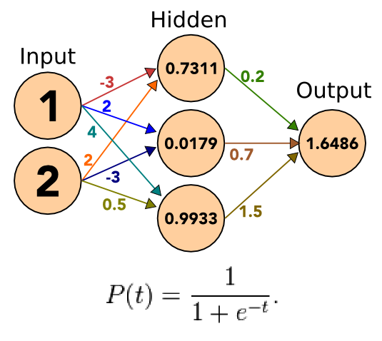
11.7.1 Repeat notes
- Take the outputs, apply weights, sum
11.8 Sigmoid
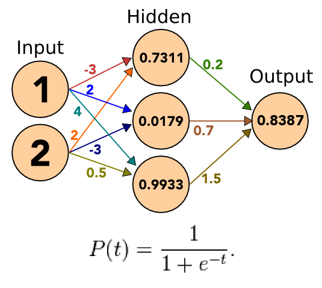
11.8.1 Apply notes
- Apply the sigmoid to the incoming signals
- Our result is greater than 0.5, so we can assume true
- If we had multiple outputs, we could choose the highest one
12 Forward Propagation
- Sum of inputs * weights
- Apply sigmoid
- Send output to next layer
- Repeat
12.1 Get an answer notes
- Now we have an output, but how do we train to get the right output?
13 Fitness Function
- Create a fitness function that measures the error
- Take derivative and a step in the right direction
- Try again
13.1 Neural Network notes
- NN training is conceptually similar to gradient descent
- We want to get closer to the answer, so we adjust our weights based on the amount of incorrectness in the system
- Adjust weights, try again
14 Back Propagation
- Run forward
- Oj is output of node
j - Calculate error of output layer
- Errj = Oj(1-Oj)(Tj-Oj)
- Caclulate error of hidden layer
- Errj = Oj(1-Oj)*sum(Errk*wjk)
- Find new weights
- wij = wij + l*Errj*Oi
- Repeat
- To move closer to correct weights
14.1 Derivative notes
- Derivative of the sigmoid is
O_j(1-O_j), so we're taking the gradient lis the learning rate, similar toastep size in gradient descent
15 Example
15.1 Expected notes
# Expected Output is 0 t_6 = 0 # Actual Output o_6 = 0.8387 # Output Error -0.11346127339699999 err_6 = o_6*(1-o_6)*(t_6-o_6) # Setup hidden node 5 o_5 = 0.9933 ; w_56 = 1.5 # Error for node 5 = -0.0011326458827956695 err_5 = o_5*(1-o_5)*(err_6*w_56) # Adjust weight to 0.37298917134759924 l = 10 # learning rate w_56 = w_56 + l*err_6*o_5
16 Terminate Learning
- Changes in weights too small
- Accuracy in training models is high
- Maximum number or times for learning
16.1 Forward and Back notes
- Guess, correct, guess, correct
- Stop when you've got a good model
- or you model is not improving
- or when you're out of time